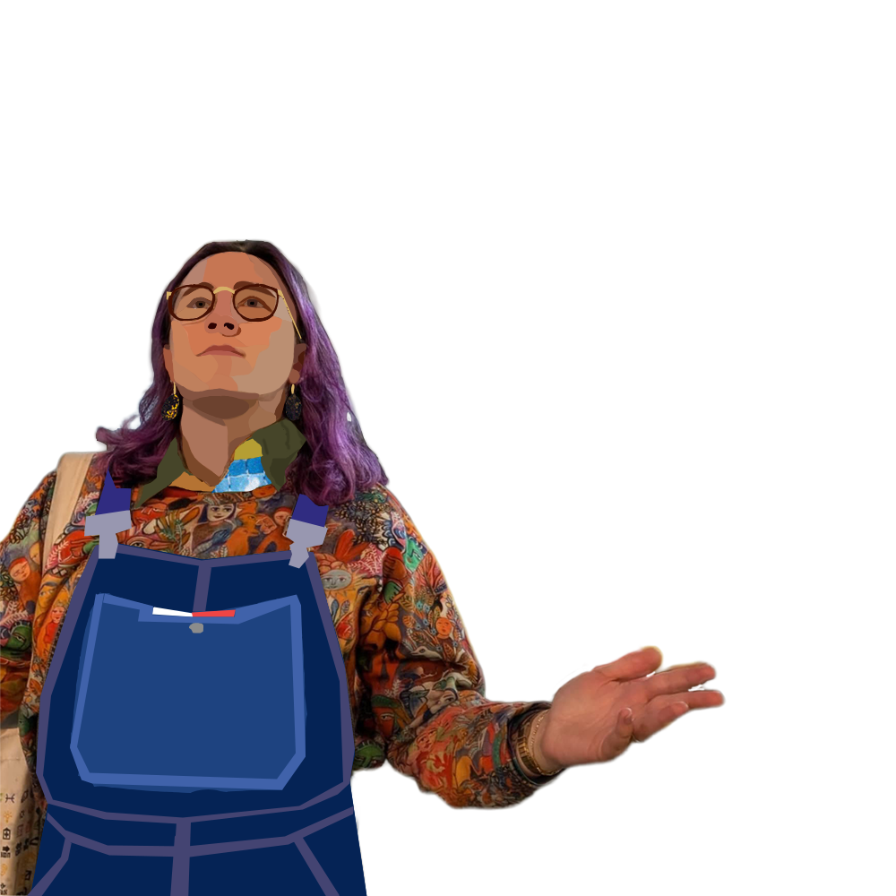

Ambient · Field recordings
Docility
Ambient music made from field recordings — rain, birdsong and water.
01 — About
About the music

Docility is ambient music made from field recordings. Most tracks start with sounds captured outdoors — rain, birds and water, recorded on Zoom recorders and RØDE mics — then built into calm, layered drones.
02 — The records
Albums
Tap a sleeve to flip it over for the details and player.